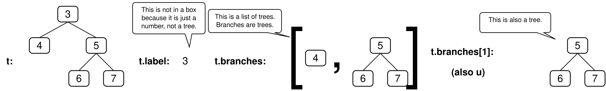
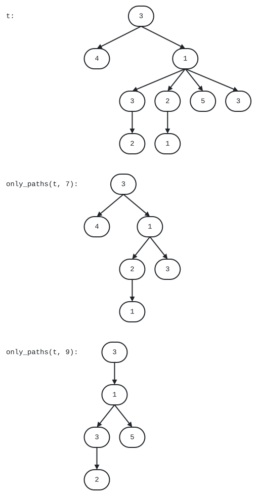

Your TA will come around during discussion to check you in. You can start on the worksheet before being checked in; you don't need to wait for your TA to get started.
If you didn't attend for a good reason (such as being sick), fill out this form (within 2 weeks of your discussion): attendance form
Everyone go around and say your name.
For fun: Think of a big word with at least three syllables, such as "solitary" or "conundrum" or "ominous". Try to use it as many times as you can during today's discussion, but in ways that don't give away that it's your big word. At the end, your group will try to guess each person's big word. Whoever uses their big word the most times (and at least twice) without their group guessing it wins. (You win nothing; it's just a game.)
A Tree has a label and a list of branches, each
of which is a Tree. A tree with no branches is called a leaf.
@dataclass
class Tree[T]:
label: T
branches: list[Tree[T]] = field(default_factory=list) # branches defaults to []
def is_leaf(t: Tree) -> bool:
"Return whether a Tree t is a leaf with no branches."
return not t.branches
For example:
Tree(4) makes a leaf labeled 4.u = Tree(5, [Tree(6), Tree(7)]) makes a tree labeled 5 with two leaves labeled 6 and 7.t = Tree(3, [Tree(4), u]) makes a tree labeled 3 with two branches: a leaf labeled 4 and the tree u.
Printing a Tree shows each label on its own line, indented below its parent's label:
>>> u = Tree(5, [Tree(6), Tree(7)])
>>> t = Tree(3, [Tree(4), u])
>>> print(t)
3
4
5
6
7
The label of the second branch of t is t.branches[1].label, which is 5.
A node of Tree t is either itself or a Tree within it. A node's parent is the Tree for which it is a branch, and its children are its branches. The root node is t and has no parent. Leaves have no children. A path is a sequence of nodes in which each is the parent of the next.
This tree visualizer draws the structure of any tree.
Remember, for a tree t:
t.label can be any value.t.branches is a list of its branches.Tree(t.label, t.branches).t is a leaf, call is_leaf(t).sum_leaves(t).def sum_leaves(t: Tree[int]) -> int:
"""Return the sum of the labels of the leaves of tree t.
>>> t = Tree(3, [Tree(4), Tree(5, [Tree(6), Tree(7)])])
>>> sum_leaves(t) # 4 + 6 + 7
17
"""
if is_leaf(t): # if t is a leaf,
return t.label # then the sum of its leaf labels is just its label
return sum([sum_leaves(b) for b in t.branches])
The type Tree[int] describes a tree whose labels are all integers.
A type variable, such as T below, represents any type and expresses that the
return value has the same type as the labels of the input tree.
def largest_leaf[T](t: Tree[T]) -> T:
"""Return the largest label of the leaves of tree t.
>>> t = Tree(3, [Tree(4), Tree(5, [Tree(6), Tree(7)])])
>>> largest_leaf(t)
7
"""
if is_leaf(t): # if t is a leaf,
return t.label # then the largest leaf label is just its label
return max([largest_leaf(b) for b in t.branches])
Implement has_path, which takes a tree t and a list p. It returns whether
there is a path from the root of t with labels p. For example, t has a
path from its root with labels [3, 5, 6] but not [3, 4, 6] or [5, 6].
Important: Before trying to implement this function, discuss these questions from lecture about the recursive call of a tree processing function:
If you get stuck, you can view our answers to these questions by clicking the hint button below, but please don't do that until your whole group agrees.
Hint 1: Big Hint: Describing the Recursive Call (at the end)
def has_path[T](t: Tree[T], p: list[T]) -> bool:
"""Return whether tree t has a path from the root with labels p.
>>> u = Tree(5, [Tree(6), Tree(7)])
>>> t = Tree(3, [Tree(4), u])
>>> has_path(t, [5, 6]) # This path is not from the root of t
False
>>> has_path(u, [5, 6]) # This path is from the root of u
True
>>> has_path(t, [3, 5]) # This path does not go to a leaf, but that's ok
True
>>> has_path(t, [3, 5, 6]) # This path goes to a leaf
True
>>> has_path(t, [3, 4, 5, 6]) # There is no path with these labels
False
"""
if p == ____: # when len(p) is 1
return True
elif t.label != ____:
return False
else:
If your group needs some guidance, see the hints below, but please talk with your group first before reading the hints.
Hint 2: Base Cases (at the end)
Hint 3: Recursive Case (at the end)
Implement find_path, which takes a tree t with unique labels and a value
x. It returns a list containing the labels of the nodes along a path from the
root of t to a node labeled x.
If x is not a label in t, return None. Assume that the labels of t are unique.
First talk through how to make and use the recursive call. (Try it yourselves; don't just click the hint button. That's how you learn.)
Hint 4: Big Hint: Describing the Recursive Call (at the end)
def find_path[T](t: Tree[T], x: T) -> list[T] | None:
"""Return a list of the labels along a path from the root of t to a node
labeled x, or None if no node is labeled x.
>>> u = Tree(5, [Tree(6), Tree(7)])
>>> t = Tree(3, [Tree(4), u])
>>> find_path(t, 5)
[3, 5]
>>> find_path(t, 4)
[3, 4]
>>> find_path(t, 6)
[3, 5, 6]
>>> find_path(u, 6)
[5, 6]
>>> print(find_path(t, 2))
None
"""
if _______________________________________:
return _______________________________________
_______________________________________:
path = _______________________________________
if path:
return _______________________________________
return None
Please don't view the hints until you've discussed with your group and can't make progress.
Hint 5: Base Case (at the end)
Hint 6: Recursive Case (at the end)
Description Time! When your group has completed this question, it's time to
describe why this function does not have a base case that checks whether t
is a leaf (is_leaf(t)). If you can't figure it out, talk to a TA.
For each person, the rest of the group should try to guess their big word (from the Getting Started section). The group only gets one guess. After they guess, reveal your big word and how many times you used it during discussion.
Tree problems often appear on exams. Here's one:
This was Question 5 from the Fall 2023 61A Midterm 2.
Implement only_paths, which takes a tree of numbers t and a number n. It
returns a tree with only the nodes of t that are on a path from the root
to a leaf with labels that sum to n, or None if no path sums to n.
Here is an illustration of the doctest examples involving t.

def only_paths(t: Tree[int], n: int) -> Tree[int] | None:
"""Return a tree with only the nodes of t along paths from the root to a leaf of t
for which the node labels of the path sum to n. If no paths sum to n, return None.
>>> print(only_paths(Tree(5, [Tree(2), Tree(1, [Tree(2)]), Tree(1, [Tree(1)])]), 7))
5
2
1
1
>>> t = Tree(3, [Tree(4), Tree(1, [Tree(3, [Tree(2)]), Tree(2, [Tree(1)]), Tree(5), Tree(3)])])
>>> print(only_paths(t, 7))
3
4
1
2
1
3
>>> print(only_paths(t, 9))
3
1
3
2
5
>>> print(only_paths(t, 3))
None
"""
if ____:
return t
new_branches = [____ for b in t.branches]
if ____(new_branches):
return Tree(t.label, [b for b in new_branches if ____])
What small initial choice can I make (such as which branch to explore)?
Choose each one of the branches and call it b.
What recursive call should I make for each branch?
Call has_path on each branch b. You'll make this call after comparing p[0]
to t.label, and so the second argument to has_path will be the rest of p:
has_path(b, p[1:]).
What type of values do they return?
has_path always returns a bool value: True or False.
What do the possible return values mean?
If has_path(b, p[1:]) returns True, then there is a path through branch b
for which p[1:] are the node labels.
How can I combine the results of those recursive calls?
If you have already checked that t.label is equal to p[0], then a True
return value from the recursive call has_path(b, p[1:]) means there is a path
through t with labels p using that branch b, so return. A False value
means there is no path through that branch, but there might be path through a
different branch, so don't return yet.
The first base case should check whether p is a list of length one with the
label of t as its only element. The second base case should check if the
first element of p matches the label of t.
When entering the recursive case, your code should already have checked that
p[0] is equal to t.label, and so all that's left to check is that p[1:]
contains the labels in a path through one of the branches. One way is with
this template:
for ____:
if ____:
return True
return False
What small initial choice can I make (such as which branch to explore)?
Choose each one of the branches and call it b.
What recursive call should I make for each branch?
find_path(b, x) on each branch b.
What type of values do they return?
Each recursive call will either return None or a non-empty list of node labels.
What do the possible return values mean?
If find_path(b, x) returns None, then x does not appear in b. If
find_path(b, x) returns a list, then it contains the node labels for a path
through b that ends with the node labeled x.
How can you use those return values to complete your implementation?
If a list is returned, then it contains all of the labels in the path except
t.label, which must be placed at the front.
If x is the label of t, then return a list with one element that contains
the label of t.
Assign path to the result of a recursive call to find_path(b, x) so that you
can both check whether it's None and extend it if it's a list.
For a list path and a value v, the expression [v] + path creates a longer
list that starts with v and then has the elements of path.